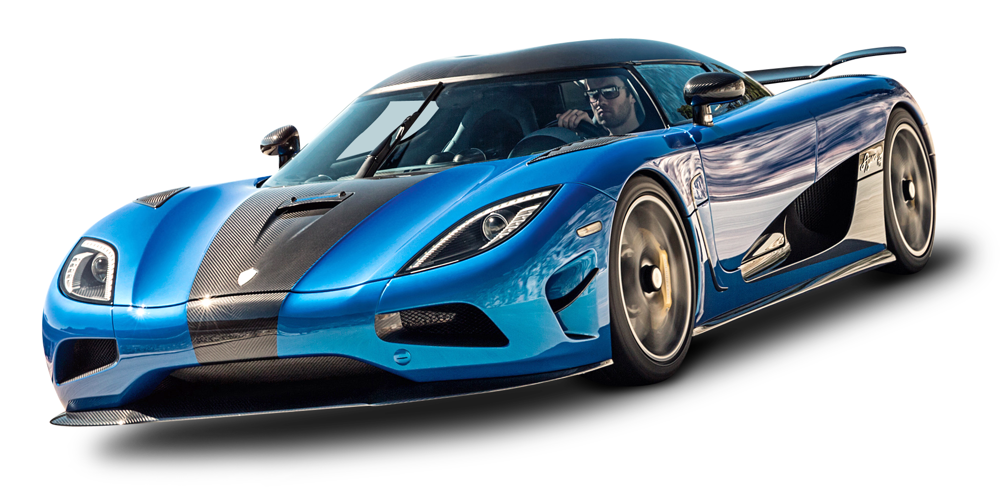

Mire se erdhet tek makinat sportive
Ketu do i gjeni disa makina sportive qe i ofron AutoSalloni jone.Shpresojme te ju pelqejne.
Aventador

Aventador makine sportive
Motori: 6.0L V12.Fuqia: 820 kuaj fuqi (horsepower).Shpejtesia maksimale: 320km/h. Shpejtesia (0-100 km/h): Rreth 2.8 sekonda
Transmisioni:Lloji: Automatik.Numri i marsheve: 8 marshe
Konsumi i karburantit: Mesatarisht: Rreth 12-14 litra per 100 km
Teknologjia dhe Opsionet: Ekrani virtual:Ekran dixhital me grafika te shkelqyera.Metodat e ngasjes: Sport,Sport+,Comfort.
Qmimi per Aventador: 1.000000 !
Motori: 6.0L V12.Fuqia: 820 kuaj fuqi (horsepower).Shpejtesia maksimale: 320km/h. Shpejtesia (0-100 km/h): Rreth 2.8 sekonda
Transmisioni:Lloji: Automatik.Numri i marsheve: 8 marshe
Konsumi i karburantit: Mesatarisht: Rreth 12-14 litra per 100 km
Teknologjia dhe Opsionet: Ekrani virtual:Ekran dixhital me grafika te shkelqyera.Metodat e ngasjes: Sport,Sport+,Comfort.
Qmimi per Aventador: 1.000000 !
Audi R8

Audi R8 GT makine sportive
Motori: 5.2L V10 atmosferik. Fuqia: 620 kuaj fuqi (horsepower). Shpejtesia maksimale: 329 km/h. Shpejtesia (0-100 km/h): Rreth 3.1 sekonda.
Transmisioni: Lloji: Automatik mundesi nderrimi te shpejtesive edhe ne timon. Numri i marsheve: 7 marshe. Sistemi i tërheqjes: Quattro.
Konsumi i karburantit: Mesatarisht: Rreth 13-14 litra për 100 km (varet nga menyra e ngarjes).
Teknologjia dhe Opsionet: Ekrani Virtual Cockpit: Ekran dixhital me grafika te shkelqyera. Sistemi audio: Bang & Olufsen me cilesi të larte. Modet e ngasjes: Sport,Comfort, Dynamic, dhe Individual.
Qmimi per Audi R8:180k!
Motori: 5.2L V10 atmosferik. Fuqia: 620 kuaj fuqi (horsepower). Shpejtesia maksimale: 329 km/h. Shpejtesia (0-100 km/h): Rreth 3.1 sekonda.
Transmisioni: Lloji: Automatik mundesi nderrimi te shpejtesive edhe ne timon. Numri i marsheve: 7 marshe. Sistemi i tërheqjes: Quattro.
Konsumi i karburantit: Mesatarisht: Rreth 13-14 litra për 100 km (varet nga menyra e ngarjes).
Teknologjia dhe Opsionet: Ekrani Virtual Cockpit: Ekran dixhital me grafika te shkelqyera. Sistemi audio: Bang & Olufsen me cilesi të larte. Modet e ngasjes: Sport,Comfort, Dynamic, dhe Individual.
Qmimi per Audi R8:180k!
Lamborghini

Lamborghini makine sportive
Motori: 6.2L V10.Fuqia: 900 kuaj fuqi (horsepower).Shpejtesia maksimale: 340km/h. Shpejtesia (0-100 km/h): Rreth 2.2 sekonda
Transmisioni:Lloji: Automatik.Numri i marsheve: 9 marshe
Konsumi i karburantit: Mesatarisht: Rreth 14 litra per 100 km
Teknologjia dhe Opsionet: Ekrani virtual:Ekran dixhital.Metodat e ngasjes: Sport,Sport+,Comfort.Viti prodhimit 2021
Qmimi per Lamborghini Hurran Coupe: 1.600.000 !
Motori: 6.2L V10.Fuqia: 900 kuaj fuqi (horsepower).Shpejtesia maksimale: 340km/h. Shpejtesia (0-100 km/h): Rreth 2.2 sekonda
Transmisioni:Lloji: Automatik.Numri i marsheve: 9 marshe
Konsumi i karburantit: Mesatarisht: Rreth 14 litra per 100 km
Teknologjia dhe Opsionet: Ekrani virtual:Ekran dixhital.Metodat e ngasjes: Sport,Sport+,Comfort.Viti prodhimit 2021
Qmimi per Lamborghini Hurran Coupe: 1.600.000 !
Koenigsegg

Koenigsegg Agera RS makine e fuqishme sportive,Lloji motorit: 5.0L V8 twin-turbocharged (benzine).
2-dyresh,Shpejtësia maksimale: Mbi 447 km/h (është një nga veturat më të shpejta në botë),Shpejtesia (0-100 km/h): Vetëm 2 sekonda. Shpejtesia (0-300 km/h): Rreth 17.95 sekonda (rekord botëror për një kohë),Pesha: Rreth 1,395 kg (shumë e lehtë për një veturë me kaq shumë fuqi). Transmisioni: Automatik me 7 shpejtësi dhe paddle-shifters (mundesi nderrimi manual të shpejtesive).
Viti prodhimit 2024
Qmimi per Koenigsegg Agera RS: 2.900.000 !
2-dyresh,Shpejtësia maksimale: Mbi 447 km/h (është një nga veturat më të shpejta në botë),Shpejtesia (0-100 km/h): Vetëm 2 sekonda. Shpejtesia (0-300 km/h): Rreth 17.95 sekonda (rekord botëror për një kohë),Pesha: Rreth 1,395 kg (shumë e lehtë për një veturë me kaq shumë fuqi). Transmisioni: Automatik me 7 shpejtësi dhe paddle-shifters (mundesi nderrimi manual të shpejtesive).
Viti prodhimit 2024
Qmimi per Koenigsegg Agera RS: 2.900.000 !
Acura

Acura makine sportive,
Motori: 5.0L V8. Fuqia: 730 kuaj fuqi (horsepower).Shpejtesia maksimale: 335km/h. Shpejtesia (0-100 km/h): Rreth 2.9 sekonda
Transmisioni:Lloji: Automatik.Numri i marsheve: 7 marshe
Konsumi i karburantit: Mesatarisht: Rreth 10-11 litra per 100 km
Teknologjia dhe Opsionet: Ekrani virtual:Ekran dixhital.Metodat e ngasjes: Sport,Comfort.Viti prodhimit 2023
Qmimi per ACURA: 1.100.000 !
Motori: 5.0L V8. Fuqia: 730 kuaj fuqi (horsepower).Shpejtesia maksimale: 335km/h. Shpejtesia (0-100 km/h): Rreth 2.9 sekonda
Transmisioni:Lloji: Automatik.Numri i marsheve: 7 marshe
Konsumi i karburantit: Mesatarisht: Rreth 10-11 litra per 100 km
Teknologjia dhe Opsionet: Ekrani virtual:Ekran dixhital.Metodat e ngasjes: Sport,Comfort.Viti prodhimit 2023
Qmimi per ACURA: 1.100.000 !
Ferrari

Ferrari makine sportive
Motori: 6.6L V12.Fuqia: 978 kuaj fuqi (horsepower).Shpejtesia maksimale: 360km/h. Shpejtesia (0-100 km/h): Rreth 2 sekonda
Transmisioni:Lloji: Automatik.Numri i marsheve: 10 marshe
Konsumi i karburantit: Mesatarisht: Rreth 14-16 litra per 100 km
Teknologjia dhe Opsionet: Ekrani virtual:Ekran dixhital.Metodat e ngasjes: Sport,Sport+,Comfort.Viti prodhimit 2024
Qmimi per Ferrari: 1.000.000 !
Motori: 6.6L V12.Fuqia: 978 kuaj fuqi (horsepower).Shpejtesia maksimale: 360km/h. Shpejtesia (0-100 km/h): Rreth 2 sekonda
Transmisioni:Lloji: Automatik.Numri i marsheve: 10 marshe
Konsumi i karburantit: Mesatarisht: Rreth 14-16 litra per 100 km
Teknologjia dhe Opsionet: Ekrani virtual:Ekran dixhital.Metodat e ngasjes: Sport,Sport+,Comfort.Viti prodhimit 2024
Qmimi per Ferrari: 1.000.000 !
Porsche 911

Porsche 911 makine sportive,
Motori: 4.2L V16.Fuqia: 600 kuaj fuqi (horsepower).Shpejtesia maksimale: 300km/h. Shpejtesia (0-100 km/h): Rreth 3.5 sekonda
Transmisioni:Lloji: Automatik.Numri i marsheve: 7 marshe
Konsumi i karburantit: Mesatarisht: Rreth 10-11 litra per 100 km
Teknologjia dhe Opsionet: Ekrani virtual:Ekran dixhital.Metodat e ngasjes: Sport,Comfort,Dyanmic,Individual.Viti prodhimit 2023
Qmimi per Porshce 911:90.0000 !
Motori: 4.2L V16.Fuqia: 600 kuaj fuqi (horsepower).Shpejtesia maksimale: 300km/h. Shpejtesia (0-100 km/h): Rreth 3.5 sekonda
Transmisioni:Lloji: Automatik.Numri i marsheve: 7 marshe
Konsumi i karburantit: Mesatarisht: Rreth 10-11 litra per 100 km
Teknologjia dhe Opsionet: Ekrani virtual:Ekran dixhital.Metodat e ngasjes: Sport,Comfort,Dyanmic,Individual.Viti prodhimit 2023
Qmimi per Porshce 911:90.0000 !
Bugatti Chiron

Bugatti Chiron makine e fuqishme sportive
Motori: 8.2L V14.Fuqia: 999 kuaj fuqi (horsepower).Shpejtesia maksimale: 399km/h. Shpejtesia (0-100 km/h): Rreth 1.9 sekonda
Transmisioni:Lloji: Automatik.Numri i marsheve: 12 marshe
Konsumi i karburantit: Mesatarisht: Rreth 18-19 litra per 100 km
Teknologjia dhe Opsionet: Ekrani virtual:Ekran dixhital.Metodat e ngasjes: Sport,Sport+,Comfort,Idividual,Dynamic.Viti prodhimit 2024
Qmimi per Bugatti Chiron: 4.000.000 !
Motori: 8.2L V14.Fuqia: 999 kuaj fuqi (horsepower).Shpejtesia maksimale: 399km/h. Shpejtesia (0-100 km/h): Rreth 1.9 sekonda
Transmisioni:Lloji: Automatik.Numri i marsheve: 12 marshe
Konsumi i karburantit: Mesatarisht: Rreth 18-19 litra per 100 km
Teknologjia dhe Opsionet: Ekrani virtual:Ekran dixhital.Metodat e ngasjes: Sport,Sport+,Comfort,Idividual,Dynamic.Viti prodhimit 2024
Qmimi per Bugatti Chiron: 4.000.000 !
Pagani Zonda

Pagani Zonda makine sportive e fuqishme,Lloji i motorit: 5.3L V12 Turbo(benzine,hybrid)
eshte 2-dyresh Shpejtesia Maksimale:Mbi 370km/h,Shpejtesia(0-100km/h):Vetem 3 sekonda,HorsePower 900+,Transmisioni:Automatik 8shpejtesi,FULL CARBON,
Viti prodhimit 2022
Qmimi per Pagani Zonda: 600k!
eshte 2-dyresh Shpejtesia Maksimale:Mbi 370km/h,Shpejtesia(0-100km/h):Vetem 3 sekonda,HorsePower 900+,Transmisioni:Automatik 8shpejtesi,FULL CARBON,
Viti prodhimit 2022
Qmimi per Pagani Zonda: 600k!